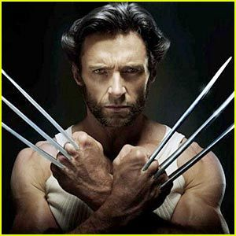

<!DOCTYPE html>
<html>
<head>
  <title></title>
</head>
<body>
</body>
</html>
-->

<!DOCTYPE html>
<html>
<head>
	<h1>Josh Dembo</h1>
    <title class="font">Wolverine</title>
    <meta name="description" content="Website highlighting the career of wolverine" />
    <meta name="author" content="Josh Dembo">
    <meta name="keywords" content="Wolverine, Marvel, Superhero, mutant, awesome" />

    <link rel="stylesheet" type="text/css" href="assets/css/style.css">
    <link href="https://fonts.googleapis.com/css?family=Indie+Flower&display=swap" rel="stylesheet">

<style>
	#link { color: #10de3c }
	#textcolor {color: #db18be}
	#thingy { color: #db1e18 }
</style>

</head>
<!--body section: discuss wolverine and his career -->
<body>
	<hr>
    <h1 class="font">Wolverine</h1>
    <i>Mutant, hunter, professional.</i> <br>
    <b>Wolverine@gmail.com</b> <br>

    <b>310-000-000</b>
    <!-- Image Tag -->
    <br>


    <p>Welcome to the website highlighting the amazing accomplishments of Wolverine. Wolverine is known as a mutant. He can summon razor sharp blades from his knuckles on demand. He ages very slowly and has lived for hundreds of years. He has increased senses and is very strong. </p>
<!-- horizontal line-->
<hr>


<a id="textcolor" href="https://www.youtube.com/watch?v=r3Slqc4wDYk" target="_blank" style="text-decoration: none;"> Wolverine in action</a>

<!-- ordered list -->
<h1>Favorite Hobbies</h1>
<ol>
	<li>Killing bad guys</li>
	<li>Smoking cigs</li>
	<li>Lifitng weights</li>
	<li>Wearing wife beaters</li>
	<li>Growing a beard</li>

</ol>

<!-- unorded list -->
<h2>Work Expireince</h2>
<h3>X-men Origins: Wolverine</h3>
<ul>
	<li>Blowing up helocopters</li>
	<li>Fighting evil brother</li>
	<li>Working for the government in special operations</li>
	<li>Fighitng in the civil war</li>
	<li>Fighting crime</li>

</ul>

<h3>Education</h3>
<ul>
	<li>Academy of fighting 1980-1985</li>
	<li>School for mutants 1986-1990</li>
	<li>Anti bad guy university 1992-1996</li>
	<li>Quantico 2000-2005</li>
	<li>Home school 2005-Present</li>

</ul>

<h3>Skills</h3>
<ul>
	<li>Lifting Heavy things</li>
	<li>Scaring enemies</li>
	<li>Runnign fast</li>
	<li>Getting things done</li>
	<li>Cutting things</li>

</ul>

<br>


<a id="link" href="https://www.marvel.com/" target="_blank" style="text-decoration: none;"> Marvel</a>


<!-- Table -->
<table border="1"> 
	<tr>
		<th>Appearences</th>
		<th>Year</th>

		
	</tr>
	<tr>
		<td>X-Men</td>
		<td>2000</td>
		
		
	</tr>

	<tr>
		<td>X2</td>
		<td>2003</td>
		
		
	</tr>
	<tr>
		<td>X-men: The Last stand</td>
		<td>2006</td>
		
		
	</tr>
	<tr>
		<td>X-men Origins: Wolverine</td>
		<td>2009</td>
		
		
	</tr>

	<tr>
		<td>X-men: First Class</td>
		<td>2011</td>
		
		
	</tr>

	<tr>
		<td>The Wolverine</td>
		<td>2013</td>
		
		
	</tr>

	<tr>
		<td>X-men: Days of Future Past</td>
		<td>2014</td>
		
		
	</tr>


</table>

</table>
	<br>
<!--address tag -->

<address>
	written by <a id="thingy" href="mailto:jnd73@maimi.edu" style="text-decoration: none;"> Josh N Dembo </a>
Visit me at <br>
Mutant HQ<br>
Mount Rushmore<br>
USA
</address>


</body>
</html>